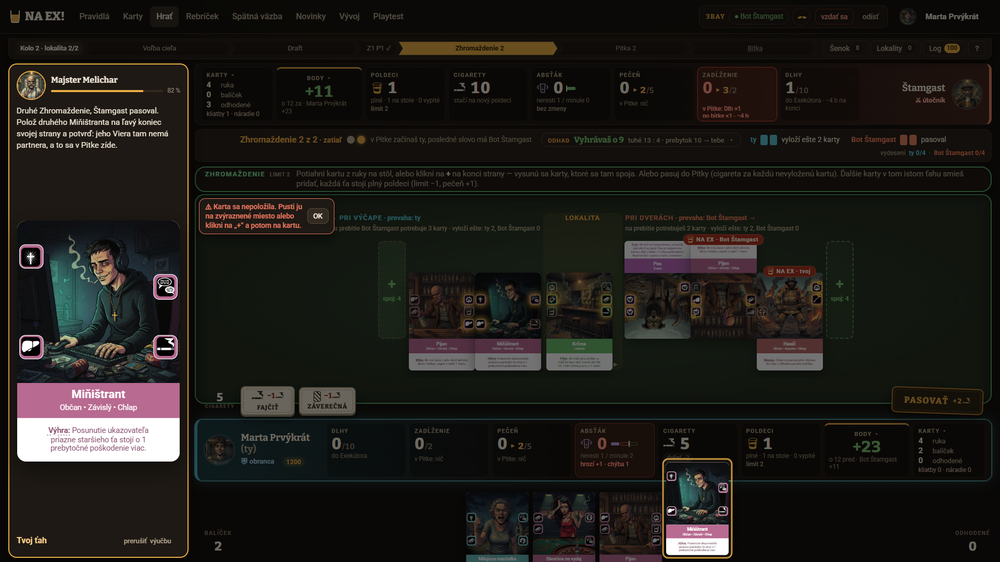
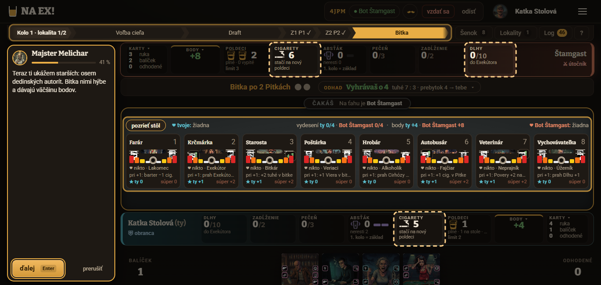
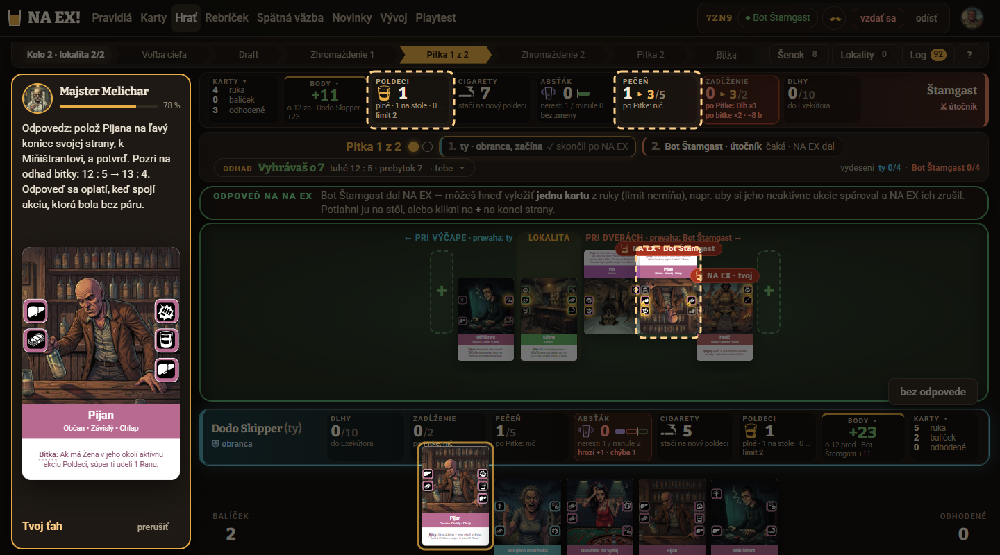
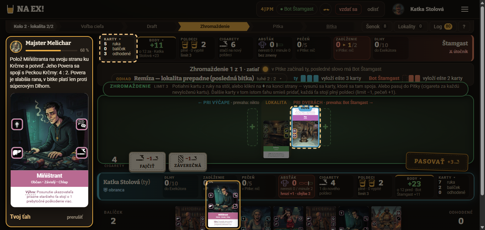

Playtest výučby Prvá hra, kolo 5 · 20261024-155610
1. Verdikt
Áno po opravách; cieľ 5. kola nie je splnený: priemer V1–V10 je 6,3 (cieľ 7; 4. kolo 6,3), test pochopenia 20/24 (cieľ 18, splnené), odmietnutia servera 0 / 5 / 0 (Marta / Dodo / Katka), Dodo 2 na jednom kroku (9, zámerný zlý klik dvakrát) — cieľ „najviac 1 na krok“ formálne nesplnený, inak 1. Priemer stojí na 6,3 už tretie kolo; test na 20/24 druhé kolo po sebe (rovnaké diery: počet Pitiek 0/3). Zlepšili sa V3 „prečo“ (5,0 → 5,7) a V9 stôl (4,3 → 5,0), no V5 zvýraznenie kleslo o 1,3 a V4 bublina o 0,7. Tri najdôležitejšie opravy:
- U1 zvýraznenia — v krokoch 8, 30, 36, 62, 83 svieti iné, než Melichar hovorí (3/3).
- S1 + S2 kroky 30, 31, 62 — počet Pitiek bez vzorca a veta „kartu môžeš dať aj na súperovu stranu“ (3/3).
- S3 + S5 kroky 27, 22 a slovník — Dlh, zadĺženie a NA EX rozdeliť, definovať Pohoršenie, prevahu, Absťák.
2. Nováčikovia
| Nováčik | Rozlíšenie | Dokončil | Dĺžka | Akcie | Chyby servera | Sebahodnotenie |
|---|---|---|---|---|---|---|
| Marta Prvýkrát (62, učiteľka; zameranie: zrozumiteľnosť textu) | 1920×1080 | 88 z 88 | 12,8 min | 127 | 0 | 55 % |
| Dodo Skipper (21, hráč online hier; ovládanie a tempo) | 1440×800 | 88 z 88 | 10,8 min | 137 | 5 (kroky 4, 9×2, 25, 43; všetky zámerné) | 60 % |
| Katka Stolová (pochopenie hry) | 1366×650 | 88 z 88 | 10,8 min | 127 | 0 | 60 % |
3. Známky V1–V10
6,3 cieľ ≥ 7 · kolá 1–4: 4,7 / 6,3 / 6,2 / 6,3
5,8 4. kolo 5,7
6,5 4. kolo 6,8
6,5 4. kolo 6,4
| Kritérium (rozbaľ = zdôvodnenia) | Marta | Dodo | Katka | Priemer ↕ | 4. kolo | Zmena |
|---|---|---|---|---|---|---|
V1 Pochopenie hryzdôvodneniaMarta: Mechaniku klikov viem, stratégiu a čísla nie; Pitky, priazeň a Pohoršenie som nechytila. Dodo: Hlavný cyklus sedí, ale Dlh, zadĺženie, absťák, pohoršenie, patronát prešli bez vysvetlenia (27, 30, 35, 57). Katka: Jadro (spoje, NA EX, bitka, starší) sedí, ale starší prišli až po bitke (41). | 5 | 6 | 6 | 5,7 | 6,0 | -0,3 |
V2 Jasnosť pokynovzdôvodneniaMarta: Takmer vždy zvýraznené, čo kliknúť; zle v krokoch 30, 31, 36, 62. Dodo: Väčšinou jasné; slabé 31 (hádanka kam položiť) a 62 (karta na súperovu stranu). Katka: Väčšinou jasné; nejasné 14, 30, 31. | 7 | 7 | 7 | 7,0 | 7,0 | 0,0 |
V3 Vysvetlenie „prečo“zdôvodneniaMarta: Dobré 28, 58 a kvízy; inak pokyny len prikazujú, pojmy prichádzajú bez vysvetlenia. Dodo: Kroky 28, 42, 43 a kvízy vysvetľujú prečo; 27 a 30 len sypú pojmy. Katka: Skvelé 16, 28, 42, 58; chýba pri šenku, Pitke, Patronáte, Absťáku, Dlhoch. | 4 | 7 | 6 | 5,7 | 5,0 | +0,7 |
V4 Bublina MelicharazdôvodneniaMarta: Písmo aj kontrast dobré, nezakrýva; kroky 30, 31, 36 majú 5–6 riadkov a 4–5 nových pojmov. Dodo: Čitateľná a vľavo; chvíľami len karta bez textu (55, 63), „ďalej“ sa stráca v 5, dlhé odseky 1, 22, 30. Katka: Čitateľná, nezakrýva stôl; kroky 8 a 30 príliš husté. | 6 | 6 | 7 | 6,3 | 7,0 | -0,7 |
V5 ZvýrazneniezdôvodneniaMarta: Ukáže presné tlačidlo, ale často sa zvýraznia nesúvisiace panely (Karty, Cigarety, Dlhy), v 83 nesedeli s textom. Dodo: Zvyčajne presné; chýba cieľová pozícia na stole (18, 31, 62). Katka: Často svieti niečo iné (8, 30, 36, 62), pri bitke 6 prvkov naraz. | 6 | 7 | 5 | 6,0 | 7,3 | -1,3 |
V6 OvládaniezdôvodneniaMarta: Klik aj ťahanie fungujú; v 72 ťahanie trikrát zlyhalo, pomohlo „+“ a klik. Tlačidlo „hotovo“ nespomenuté. Dodo: Drag aj klik fungujú, skratky výborné; chyba po oprave ostane visieť (9), Enter v 54 nič neurobil. Katka: Ťahanie, potvrdiť, kvízy klávesmi 1–3 fungujú; KONČÍM zhasnuté bez dôvodu. | 7 | 7 | 8 | 7,3 | 7,0 | +0,3 |
V7 Tempo a dĺžkazdôvodneniaMarta: 88 krokov je veľa; 30–45 hustá nálož, zhrnutie (84) neskoro. Dodo: Pre netrpezlivého dlho: čakania „Štamgast ťahá“ a tri „hra ťahá za teba“ po sebe; kolo 2 sa opakuje. Katka: Začiatok pekný, v strede (51–77) veľa pasívneho Enteru. | 5 | 5 | 6 | 5,3 | 5,3 | +0,0 |
V8 Tón MelicharazdôvodneniaMarta: Milý, krátke vety, „Na zdravie!“ pobavilo. Dodo: Hospodský, vecný; málo humoru. Katka: Stručný, hospodský; občas príliš strohý. | 8 | 7 | 8 | 7,7 | 7,3 | +0,4 |
V9 Čitateľnosť stolazdôvodneniaMarta: Karty a texty ~8–10 px, 8 starších naraz preplnených, dlhá technická lišta hore, karta Štamgasta hore nohami. Dodo: Pri 1440×800 orezaná ruka, drobný text starších, štítky NA EX sa prekrývajú (107). Katka: Pri 1366×650 sa stránka rolovala (77–194 px), štítky NA EX a tlačidlá prekrývajú karty. | 4 | 6 | 5 | 5,0 | 4,3 | +0,7 |
V10 Chuť hraťzdôvodneniaMarta: Vyhrala som 45:11, ale bez nápovedy by som nevedela; zaujala hra, nie obrazovka. Dodo: Víťazstvo a rozpis bodov motivujú; chcem to skúsiť bez pomoci. Katka: Pocit „zvládam“, aj keď polovicu urobila hra za mňa. | 6 | 7 | 7 | 6,7 | 6,7 | -0,0 |
Zhodli sa, že pokyny sú väčšinou jasné (V2 = 7 u všetkých), tón je dobrý (V8 7–8) a tempo a čitateľnosť stola sú slabé (V7 5–6, V9 4–6). Rozišli sa vo V3: Marta (4) vníma, že pokyny len prikazujú, Dodo (7) mu stačia kvízy a kroky 28, 42, 43. Štýl je vidieť: Marta, ktorá číta všetko, trpí slovníkom a hustými bublinami; Dodo preskakuje a trápi ho tempo a drobnosti ovládania; Katka najviac pomenuje zvýraznenia a rolovanie pri 1366×650.
4. Test pochopenia
Meradlo rovnaké ako v 3. a 4. kole: „správne“ = bez podstatnej chyby a bez medzery označenej v predošlom kole (cieľ hry vrátane okamžitej výhry a mínusu za Dlhy a Cirhózu, smer markera starších, limit Zhromaždenia, počet Pitiek, plán z krokov 86–88). Overené proti docs/PRAVIDLA.md.
20 / 24 cieľ ≥ 18 · kolá 1–4: 8 / 14 / 17 / 20 · Marta 7, Dodo 7, Katka 6 z 8
≈ 17 ak sa hraničné odpovede (Katka 1, Dodo a Katka 7) berú ako čiastočné; mierne až 24
| Otázka | Marta | Dodo | Katka | Spolu | Poznámka |
|---|---|---|---|---|---|
| 1 Cieľ hry | správne | správne | správne | 3/3 | Všetci: viac bodov (lokality, starší, cigarety), mínus Dlhy a Cirhóza, výhra vydesením 4 z 8. Katka „udržať“ presne nevie (hraničné). |
| 2 Priebeh kola | čiastočne | čiastočne | čiastočne | 0/3 | Poradie fáz vedia, počet Pitiek nie: Marta „1 + menší z počtov… to som nepochopila“, Dodo „1–4 krát“, Katka „presný počet neviem“. Správne (§7): Pitiek je 1 + menší z počtov spojených akcií hrán lokality. Mal učiť krok 30 — práve ten nepochopili všetci. |
| 3 Zhromaždenie | správne | správne | správne | 3/3 | Limit plné poldeci + 1, spoje v rovnakej výške, pasovanie za cigaretu; Dodo aj Katka vedia o súperovej strane. |
| 4 Pitka a NA EX | správne | správne | správne | 3/3 | Plný poldeci na kartu, spojené zruší, osamotené zdvojí, pečeň a Cirhóza, odpoveď kartou. |
| 5 Bitka | správne | správne | správne | 3/3 | Rana 1 / Pecka 2 / Petelica 3, remíza na sekeru, prebytok posúva starších. |
| 6 Starší | správne | správne | správne | 3/3 | Smer k súperovi, strach = body, priazeň = bonus súpera, červená = vydesený. Marta a Dodo si pletú, prečo je to „otočené“ (Marta: „neviem vysvetliť“) — odpoveď je však vecne správna. |
| 7 Poldeci a cigarety | správne | správne | správne | 3/3 | Poldeci = limit kariet a náboj NA EX, cigarety = platidlo a body. Dodo a Katka nevedia presne, ako vzniká nový poldeci (hraničné). |
| 8 Čo by urobil inak | správne | správne | čiastočne | 2/3 | Marta (NA EX až keď je pečeň ďaleko od limitu, súperova strana) a Dodo (partner k Petelici, pozerať pečeň) hovoria plán z krokov 86–88; Katka len „pozerať pečeň a Dlhy, skúsiť odpoveď kartou“. |
Naučila spoľahlivo: Zhromaždenie, Pitku a NA EX, bitku, starších, poldeci a cigarety, cieľ hry (3/3). Nenaučila nikoho: počet Pitiek (otázka 2, 0/3 druhé kolo), Dlh/zadĺženie, Absťák, Pohoršenie, patronát, prevahu (3/3 ich uvádza ako „neviem“). Marta: „Prečo robím čo, vlastne neviem (strach/priazeň, počet Pitiek, zmysel Smetiska a Pohoršenie).“
5. Mapa problémových krokov
| Krok | Id a text | Marta | Dodo | Katka | Poznámka |
|---|---|---|---|---|---|
| 8 | i-hrany Hasič, ikony akcií: tuhé, Rana 1, Pecka 2, Petelica 3 | 2 | 3 | 3 | Svieti súperov bar (Cigarety), nie Hasič; ikony bez názvov. |
| 9 | k4 Kúp Hasiča | – | – | – | Dodo zámerne Pes ×2: 2 odmietnutia, chyba po oprave visí. |
| 22 | i-pitka Pitka, NA EX: zruší spojené, zdvojí osamotené | 2 | 2 | 2 | Najhustejšia veta úvodu (3/3 jasnosť 2). |
| 27 | k19 Vyhodnotenie Pitky: Dlh, zadĺženie, karta Dlh | 2 | 1 | 2 | 4 panely zvýraznené naraz, pojmy bez definície. |
| 30 | k20 Pitky sú dnes dve… jedna plus menší z dvoch počtov | 1 | 1 | 1 | 3/3 nepochopili; zvýraznené cigarety súpera. |
| 31 | k21 Polož Miňištranta, aby sa spojila Viera. Kam ho dáš? | 2 | 2 | 3 | Hádanka; nik nevedel, že sa dá na súperovu stranu. |
| 36 | i-ukazem Teraz ti ukážem starších | 1 | 4 | 2 | Zvýraznené Cigarety a Dlhy namiesto starších. |
| 62 | k42 Hasič na pravý koniec Štamgastovej strany | 3 | 2 | 3 | Svieti Štamgastov bar; „prečo na súpera“ nepovedané. |
| 72 | k52 Druhý Miňištrant na ľavý koniec | 3 | 4 | 3 | Marta: ťahanie 2× zlyhalo, 37 s, 7 akcií. |
| 83 | i-koniec Víťazstvo 45 : 11, rozpis bodov | 3 | 4 | 5 | Marta: zvýraznené Karty/Poldeci/Cigarety nesedia s textom. |
6. Zaseknutia
Tvrdé zaseknutie nemal nik. Malé: Marta, krok 72 (UI, možná chyba hry): ťahanie na „+“ 2× zlyhalo, klient hlásil „Karta sa nepoložila. Pusti ju na zvýraznené miesto alebo klikni na „+“ a potom na kartu“, server bez chyby; vyriešila klikom (U4). Kroky 31 a 62 (scenár): hádanka, kam položiť; 3/3 uhádli podľa „pravý koniec“ (S2). Krok 30 (scenár): 3/3 nepochopili, ale krok sa dá preskočiť (S1). Dodo zámerne zlé kliky: Krčma (krok 4), Pes ×2 (9), K (25), Hrobár namiesto Farára (43) — server vrátil „Takto nie — ešte chýba: …“ a klient to ošetril zrozumiteľne (okrem U5).


7. UI a UX
- Zvýraznenie (3/3): nesedí s textom v krokoch 8, 30, 36, 62, 83; pri bitke 6 prvkov; chýba cieľové miesto pri kladení kariet (U1).
- Čitateľnosť stola (3/3): karty a starší 8–10 px, súperove karty hore nohami, dlhá lišta pod fázami (Marta), rolovanie 77–194 px pri 1366×650 (Katka), orezaná ruka pri 1440×800 (Dodo) (U2).
- Štítky NA EX (Dodo, Katka): prekrývajú karty a tlačidlá (U3).
- Ovládanie: ťahanie v 72 (Marta, U4); chyba po oprave, Enter v 54, KONČÍM zhasnuté (Dodo, Katka, U5); skratky P/K/N/1–3/Enter Dodo chváli.
- Lupa karty zostala nad stolom (Marta) a log „hráčovi 2“ je strojový (Marta, Dodo) (U6). Bublina: čitateľná, vľavo, nezakrýva (3/3); Dodo: chvíľami v nej len karta bez textu (55, 63) a „ďalej“ sa stráca v 5.


8. Dĺžka a tempo
Celkovo 10,8 – 12,8 min, 127–137 akcií, najdlhší krok 72 u Marty (37 s). Husté sú kroky 22, 27, 30, 36 (4–6 riadkov, viac nových pojmov). Pasívne čakania v kole 2 (51–77) sú pre Doda a Katku nuda, Marta kolo 2 oceňuje ako opakovanie; zhrnutie (84–88) je podľa nej neskoro. V7 = 5,3 ako v 4. kole.
9. Melichar
Tón sa páči (V8 7,7, najvyššie kritérium): „To je celá krčma. Štamgast sa z toho vyspí… Na zdravie!“ (Marta), „Kto vydesí štyroch starších a udrží ich tak do konca ďalšieho kola, vyhrá hneď“ (Katka), „NA EX nie je zadarmo“ (Dodo, krok 28), kvízové opravy typu „Strana nerozhoduje. Rozhoduje partner na spoji.“ Najhoršia hláška jednomyseľne krok 30 („Pitiek je vždy jedna plus menší z tých dvoch počtov, teda jedna až štyri“), potom 27 (Dlh/zadĺženie). Marta: občas príliš „tykajúci“, neruší; Dodo: málo humoru.
10. Čo chýba a čo je navyše
Chýba: lokalita a kolo (1), šenok a Smetisko „prečo“ (5), názvy ikôn Rana/Pecka/Petelica (8), Pohoršenie, prevaha, Furt, Nástup, patronát, Absťák, Dlh/Exekútor, prah Cirhózy, kde sa vidí skóre bitky a priebežné body, že kartu možno dať na súperovu stranu (3/3), ako sa kupuje nový poldeci, prečo sú súperove karty hore nohami, že „hotovo“ potvrdzuje nákup. Navyše: „nevšímaj si Absťák, je posledné kolo“, Povera a Cirhóza v kroku 22, opakované odhady čísel (7:0, 12:3, 13:4) bez ukázania kde, tri „hra ťahá za teba“ po sebe.
11. Návrhy opráv
Zoradené podľa odhadu dopadu na priemer (odhad spisovateľa, nie meranie). Na 7,0 treba +0,7, teda +7 bodov zo súčtu desiatich kritérií: U1 (V5 späť na 7,3 a viac, +1 až +1,5), S1–S3 (V3 a V1, +1 až +2), U2 + U3 (V9, V7, +1 až +1,5); S4–S7 a U4–U6 menej. Test sa udrží ≥ 18 aj prísne len ak S1 zdvihne otázku 2 z 0/3.
12. Opravy z 4. kola
Zabralo / čiastočne / nezabralo
- U3 animácia bitky pred bublinou — nik už nehlásil; málo dát, pravdepodobne zabralo.
- U1 čitateľnosť stola — V9 4,3 → 5,0, ale drobný text a rolovanie pri 1366×650 ostali (čiastočne).
- S1 slovník — V3 5,0 → 5,7, Marta už vie, čo je poldeci; Dlh, Pohoršenie, prevaha, Absťák ostali bez vety (čiastočne).
- U2 kroky bez bubliny — nik nehlási čítanie bez bubliny, no V7 sa nepohlo (5,3) a pasívne kroky kola 2 ostali (čiastočne).
- U4 lupa — Marta ju stále hlási (nezabralo); U5 ťahanie v 72 — zlyhalo znova (nezabralo).
- U6 zvýraznenia — V5 kleslo o 1,3 (nezabralo); S2 počet Pitiek — otázka 2 stále 0/3, krok 30 jasnosť 1/1/1 (nezabralo); S3 Viera a Dlh — kroky 31 a 36 stále zmiatli 3/3 (nezabralo).
Report vznikol z feedbackov, denníkov, záznamu akcií a snímok troch AI nováčikov v jednej relácii; každá partia je jeden údaj.